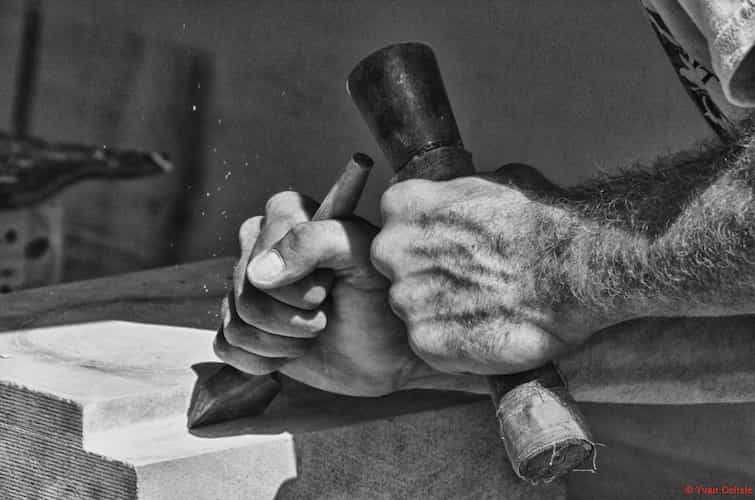
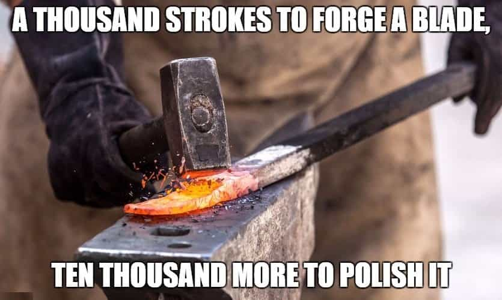
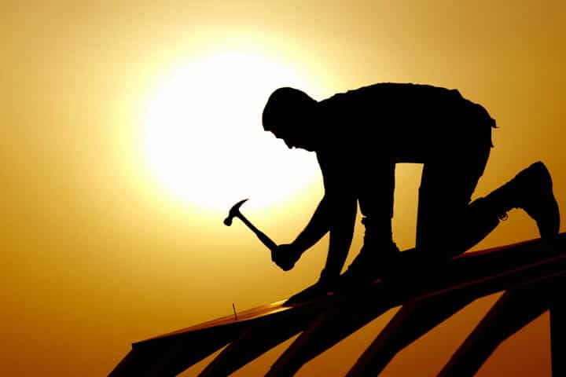
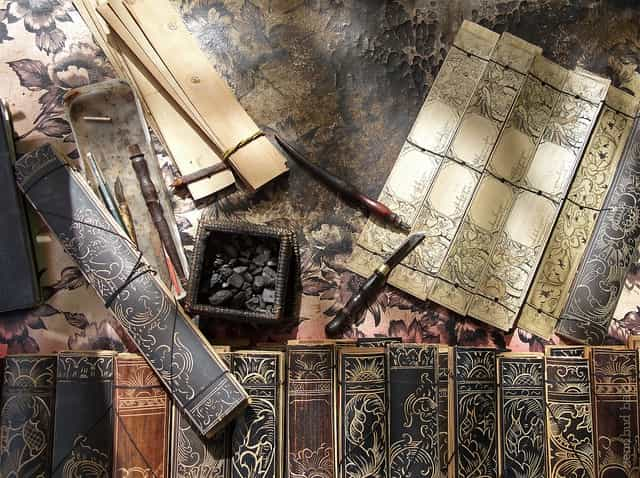
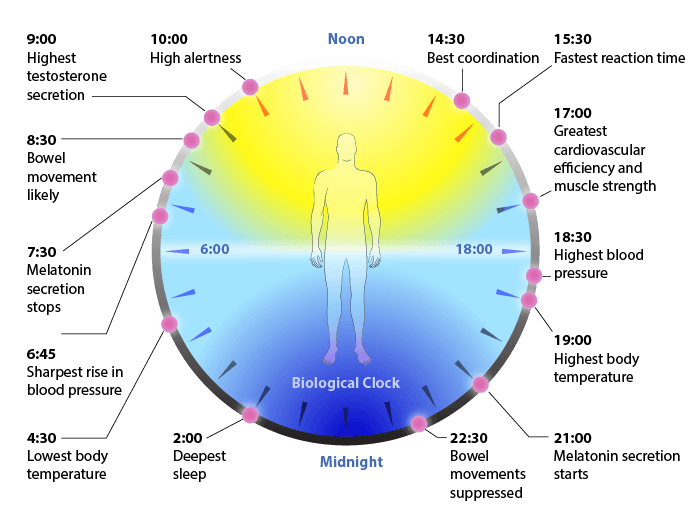

I have always enjoyed creating things with my hands. I believe it is a good way to counter our contemporary society when it encourages us to be mindless consumers, with our days spent sitting, riveted to a screen of some sort, rather than skilled artisans. Crafts connect us to our profound human nature and our innate desire to create something useful, beautiful or both from an abstract concept, giving it life with the help of raw materials, sheer strength and skill.
1. Respect

Seeing how hard it is to create out of nothing teaches you to appreciate the value of your possessions. One can only understand the talent artisans need when building furniture or weaving fabric, by trying to duplicate it. Before doing one myself, I had no idea that a table took so long to build, making sure all the angles are correct, the pieces fit neatly together and it does not wobble.
You will know humility when you try to sell you craft, noticing how people haggle while you remember how many hours you spent on your creation. You will respect, and not worship, your material possessions.
You will learn the importance of good tools. By choosing poor quality tools or material, you cannot expect good results, just like surrounding yourself with low quality people.
2. Ingenuity
“This item I want costs two hundred dollars, which I cannot afford now. No worries, I will do it myself.”
If you spend a hundred hours to create what you could have bought at the click of the button if you had the means, what is the lesson? If it was unpleasant, you will want to reach a financial stability where these two hundred dollars can be spent every day. You might want to create passive income, find a niche or discover a new way to gain financial success so you can afford those nice things that take long hours to build.
You will learn to improvise and circle around problems when you lack the tool, material or resources necessary to reach your goal.
3. Concentration

Extreme focus will be required on the task at hand. It is a welcome change in an era where multitasking, fooling around and short attention span are common place. Only dedication will help you improve.
Martial arts and handicrafts need a similar state of mind. If you are not able to blank the troubles and the various ideas in your mind, you will be thrown on the ground or punched, the same way you can overheat steel because you were busy chatting or cut too short the plank that you carefully measured seven times. Dedicate your total brain power to what you are doing.
Multitasking could come when the task is mastered or involves minimal risk. But I notice that the large majority of people that get hurt do so out of carelessness. While I advocate focus, the activity should still be enjoyable.
4. Motivation

It improves your patience and shows you how easily a mistake is made. The success of your projects will make you want to build more, you find purpose in your art. These skills will help you in the future.
For example, I am not as proficient as I would like to be in carpentry and this is something I would like to change. One of my projects is to build a traditional Norse long house. I have the plans and the land, now I just need to learn the technique. I long to build a place where I can gather my close circle, a sanctuary that I can entirely call mine as I will bring it into this world and will take care of it, just like a child.
5. Peace of mind

A majority of our hobbies need a screen nowadays (chatting with friends, watching films or Youtube, reading, blogging, video games, etc). We remain static and get rusty. Keeping our eyes on those devices disrupt our Circadian rhythm and prevents us from sleeping correctly.

Crafts keep you away from electronic screens, bring you good fatigue and quality sleep. They are a dynamic hobby and are simply good for the body and soul.
It can be compared to a meditation in motion. After hours spent in the workshop, I am tired and my mind is at peace. I am convinced that I have not wasted the hours I put into it.
L’oisiveté est mère de tous les vices
I try to follow what I preach. I needed a Viking practice steel sword for HEMA so I decided to built one. I enjoyed doing it although it took long hours. Click here to see the video.
What crafts teach you will always be beneficial, by its practical or therapeutic aspect. They can be enjoyed until an advanced age. You just need a sturdy work station, a few tools, steady hands and a fertile mind.
Read More: In Praise of Painting